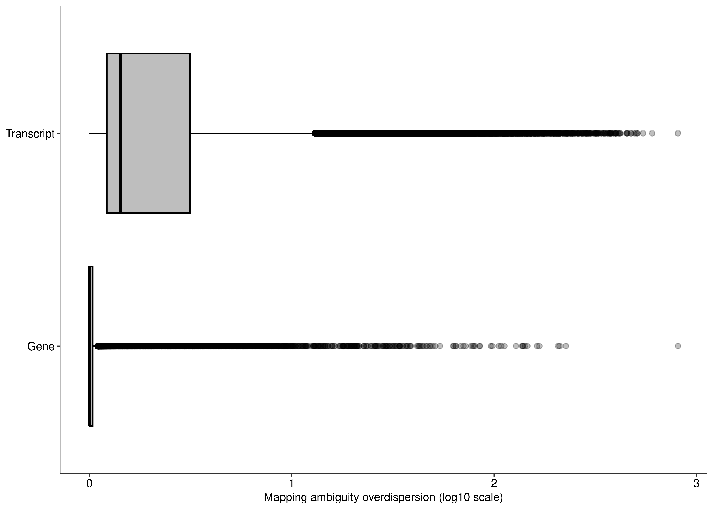

Analysis of the RNA-seq data from the epithelial cell population of the mouse mammary gland
Pedro L. Baldoni
17 February, 2023
Last updated: 2023-02-17
Checks: 7 0
Knit directory: TranscriptDE-wf/analysis/
This reproducible R Markdown analysis was created with workflowr (version 1.7.0). The Checks tab describes the reproducibility checks that were applied when the results were created. The Past versions tab lists the development history.
Great! Since the R Markdown file has been committed to the Git repository, you know the exact version of the code that produced these results.
Great job! The global environment was empty. Objects defined in the global environment can affect the analysis in your R Markdown file in unknown ways. For reproduciblity it’s best to always run the code in an empty environment.
The command set.seed(20221115) was run prior to running
the code in the R Markdown file. Setting a seed ensures that any results
that rely on randomness, e.g. subsampling or permutations, are
reproducible.
Great job! Recording the operating system, R version, and package versions is critical for reproducibility.
Nice! There were no cached chunks for this analysis, so you can be confident that you successfully produced the results during this run.
Great job! Using relative paths to the files within your workflowr project makes it easier to run your code on other machines.
Great! You are using Git for version control. Tracking code development and connecting the code version to the results is critical for reproducibility.
The results in this page were generated with repository version 21fff01. See the Past versions tab to see a history of the changes made to the R Markdown and HTML files.
Note that you need to be careful to ensure that all relevant files for
the analysis have been committed to Git prior to generating the results
(you can use wflow_publish or
wflow_git_commit). workflowr only checks the R Markdown
file, but you know if there are other scripts or data files that it
depends on. Below is the status of the Git repository when the results
were generated:
Ignored files:
Ignored: .DS_Store
Ignored: .Rhistory
Ignored: .Rproj.user/
Ignored: ._.DS_Store
Ignored: .gitignore
Ignored: analysis/simulation-complete_cache/
Ignored: analysis/simulation-paper_cache/
Ignored: code/mouse/single-end/salmon/slurm-9574761.out
Ignored: code/pkg/.Rhistory
Ignored: code/pkg/.Rproj.user/
Ignored: code/pkg/pkg.Rproj
Ignored: code/pkg/src/RcppExports.o
Ignored: code/pkg/src/pkg.so
Ignored: code/pkg/src/rcpparma_hello_world.o
Ignored: data/annotation/mm39/
Ignored: data/mouse/paired-end/fastq/
Ignored: data/mouse/single-end/fastq/
Ignored: misc/.DS_Store
Ignored: misc/._.DS_Store
Ignored: misc/mouse.Rmd/._figure6.png
Ignored: misc/simulation-paper.Rmd/._figure2.png
Ignored: misc/simulation-paper.Rmd/._figure5.png
Ignored: output/mouse/paired-end/
Ignored: output/mouse/single-end/
Ignored: output/quasi_poisson/
Ignored: output/simulation/
Note that any generated files, e.g. HTML, png, CSS, etc., are not included in this status report because it is ok for generated content to have uncommitted changes.
These are the previous versions of the repository in which changes were
made to the R Markdown (analysis/mouse.Rmd) and HTML
(docs/mouse.html) files. If you’ve configured a remote Git
repository (see ?wflow_git_remote), click on the hyperlinks
in the table below to view the files as they were in that past version.
| File | Version | Author | Date | Message |
|---|---|---|---|---|
| Rmd | 21fff01 | Pedro Baldoni | 2023-02-17 | Organizing mouse report |
| html | b8e3979 | Pedro Baldoni | 2023-02-17 | Build site. |
| Rmd | 57b0d00 | Pedro Baldoni | 2023-02-17 | Renaming repo and organizing main page |
| html | 57b0d00 | Pedro Baldoni | 2023-02-17 | Renaming repo and organizing main page |
| Rmd | e75e3d9 | Pedro Baldoni | 2023-01-23 | Adjusting figures |
| html | e75e3d9 | Pedro Baldoni | 2023-01-23 | Adjusting figures |
| Rmd | edbcc15 | Pedro Baldoni | 2023-01-23 | Repeat header |
| Rmd | 753efad | Pedro Baldoni | 2023-01-23 | Adjusting latex tables |
| Rmd | 623d429 | Pedro Baldoni | 2023-01-23 | Splitting figures |
| html | 623d429 | Pedro Baldoni | 2023-01-23 | Splitting figures |
| Rmd | e64cf4d | Pedro Baldoni | 2023-01-19 | Changing values of reference to report in main paper |
| html | e64cf4d | Pedro Baldoni | 2023-01-19 | Changing values of reference to report in main paper |
| Rmd | 9a3e926 | Pedro Baldoni | 2023-01-06 | Organizing output from mouse analysis |
| html | 9a3e926 | Pedro Baldoni | 2023-01-06 | Organizing output from mouse analysis |
| Rmd | c228d3f | Pedro Baldoni | 2023-01-05 | Updating mouse report |
| html | c228d3f | Pedro Baldoni | 2023-01-05 | Updating mouse report |
| html | 481735c | Pedro Baldoni | 2022-11-24 | Build update from workflowr |
| Rmd | 3e9c510 | Pedro Baldoni | 2022-11-22 | Adding mouse report |
| html | 5ee1116 | Pedro Baldoni | 2022-11-22 | Updating docs |
Introduction
In this page, we present the analysis of the epithelial cell population of the mouse mammary gland. The report is divided in two main parts: the analysis of the paired-end data from the basal, luminal progenitor (LP), and mature luminal (ML) cells, and the analysis of the single-end data from the basal and LP cells (GSE60450).
The analysis presented in this report begins with the experimental
data already quantified by Salmon. Please refer to the
script files located in the GitHub repository of this page under the
directory path ./code/mouse which show the commands used to
quantify the RNA-seq reads from these experiments. The
targets files from these experiments are located in
./data/mouse.
Setup
We begin this report by setting up some options for rendering this webpage and loading the necessary libraries.
knitr::opts_chunk$set(
dev = "png",
dpi = 300,
dev.args = list(type = "cairo-png"),
root.dir = '.'
)library(edgeR)
library(data.table)
library(ggplot2)
library(readr)
library(Rsubread)
library(rtracklayer)
library(magrittr)
library(ggpubr)
library(plyr)
library(gplots)
library(grid)
library(ComplexHeatmap)
library(patchwork)
library(tibble)
library(tidyHeatmap)
library(AnnotationHub)
library(sleuth)
library(fishpond)
library(tximeta)
library(tidyverse)
library(SummarizedExperiment)
library(stringr)
library(ragg)
library(kableExtra)Below we load the Ensembl 104 annotation from
AnnotationHub which is associated to the Ensembl M27
annotation of the mouse mm39 genome.
# 'AH95775' annotation corresponds to Ensembl 104 (release M27)
ah <- AnnotationHub()snapshotDate(): 2022-10-31edb <- ah[['AH95775']]loading from cacherequire("ensembldb")ensid <- keys(edb)
cols <- c("TXIDVERSION","TXEXTERNALNAME","TXBIOTYPE","GENEIDVERSION",
"GENENAME","GENEBIOTYPE","ENTREZID")
dt.anno <- select(edb,ensid,cols)
dt.anno <- as.data.table(dt.anno)
dt.anno.gene <-
dt.anno[,.(NTranscriptPerGene = .N),
by = c('GENEIDVERSION','GENEBIOTYPE','ENTREZID','GENENAME')]
dt.anno.gene[,GeneOfInterest := GENEBIOTYPE %in% c('protein_coding','lncRNA')]
dt.anno <-
merge(dt.anno,dt.anno.gene[,-c(2,3,4)],by = 'GENEIDVERSION',all.x = TRUE)Paths used in this report are specified below.
path.anno <- '../data/annotation/mm39'
path.misc <- file.path('../misc',knitr::current_input())
dir.create(path.misc,recursive = TRUE,showWarnings = FALSE)
path.data.pe <- '../data/mouse/paired-end'
path.quant.pe <- '../output/mouse/paired-end'
path.data.se <- '../data/mouse/single-end'
path.quant.se <- '../output/mouse/single-end'Analysis of paired-end data
The analysis of paired-end data is divided in two parts. First, we present the analysis at the transcript-level. Second, we present a gene-level analysis. All results discussed in the main paper regarding these experiments are presented in this report.
Transcript-level analysis
Data wrangling
The transcript-level analysis starts with some data wrangling.
dt.targets.pe <- fread(file.path(path.data.pe,'misc/targets.txt'))
dt.targets.pe[,Sample := paste(Group,Replicate,sep = '.')]
dt.targets.pe[,Color := mapvalues(Group,
from = c('Basal','LP','ML'),
to = c('blue','darkgreen','red'))]
setnames(dt.targets.pe,old = 'Group',new = 'group')
dt.targets.pe[,path :=
file.path(path.quant.pe,'salmon',gsub('_R1.fastq.gz','',File1))]We then load Salmon’s output with the function
catchSalmon from edgeR while bringing in some
information about the Ensembl M27 annotation.
catch.pe <- catchSalmon(dt.targets.pe$path,verbose = FALSE)
key.catch.pe.anno <- match(rownames(catch.pe$annotation),dt.anno$TXIDVERSION)
catch.pe$annotation$TranscriptName <- dt.anno$TXEXTERNALNAME[key.catch.pe.anno]
catch.pe$annotation$GeneID <- dt.anno$GENEIDVERSION[key.catch.pe.anno]
catch.pe$annotation$GeneName <- dt.anno$GENENAME[key.catch.pe.anno]
catch.pe$annotation$GeneEntrezID <- dt.anno$ENTREZID[key.catch.pe.anno]
catch.pe$annotation$GeneOfInterest <- dt.anno$GeneOfInterest[key.catch.pe.anno]
catch.pe$annotation$NTranscriptPerGene <- dt.anno$NTranscriptPerGene[key.catch.pe.anno]
catch.pe$annotation$Type <- dt.anno$TXBIOTYPE[key.catch.pe.anno]Differential transcript expression
edgeR with count scaling
First, we assess DTE with the edgeR via count scaling
pipeline.
dte.pe.scaled <-
DGEList(counts = catch.pe$counts/catch.pe$annotation$Overdispersion,
genes = catch.pe$annotation,
samples = dt.targets.pe)
colnames(dte.pe.scaled) <- dte.pe.scaled$samples$SampleSome basic filtering is done below. We restrict our analyses to protein-coding genes and lncRNA.
keep.pe.scaled <-
filterByExpr(dte.pe.scaled) & dte.pe.scaled$genes$GeneOfInterest
dte.pe.scaled.filtr <- dte.pe.scaled[keep.pe.scaled,, keep.lib.sizes = FALSE]Next, we specify the design matrix of our experiment, calculate normalizing factors and estimate the trended negative binomial dispersions.
design.pe <- model.matrix(~0+group,data = dte.pe.scaled.filtr$samples)
dte.pe.scaled.filtr <- calcNormFactors(dte.pe.scaled.filtr)
dte.pe.scaled.filtr <- estimateDisp(dte.pe.scaled.filtr,design.pe,robust = TRUE)We proceed with the QL pipeline from edgeR by first
calling glmQLFit and then running QL tests with
glmQLFTest.
fit.pe.scaled <- glmQLFit(dte.pe.scaled.filtr,design.pe,robust = TRUE)
con.LPvsB <- makeContrasts(LPvsB = groupLP - groupBasal,levels = design.pe)
con.MLvsLP <- makeContrasts(MLvsLP = groupML - groupLP,levels = design.pe)
qlf.pe.LPvsB.scaled <- glmQLFTest(fit.pe.scaled,contrast = con.LPvsB)
qlf.pe.MLvsLP.scaled <- glmQLFTest(fit.pe.scaled,contrast = con.MLvsLP)
out.pe.LPvsB.scaled <- topTags(qlf.pe.LPvsB.scaled,n = Inf)
out.pe.MLvsLP.scaled <- topTags(qlf.pe.MLvsLP.scaled,n = Inf)
summary(decideTests(qlf.pe.LPvsB.scaled)) -1*groupBasal 1*groupLP
Down 9002
NotSig 26192
Up 8382summary(decideTests(qlf.pe.MLvsLP.scaled)) -1*groupLP 1*groupML
Down 2422
NotSig 38639
Up 2515edgeR with raw counts
Next, we run the edgeR pipeline with raw counts without
deflating counts by their associated mapping ambiguity overdispersion.
The pipeline is similar to the one used with scaled counts, and the only
difference is regarding count deflation which is now absent.
dte.pe.raw <- DGEList(counts = catch.pe$counts,
genes = catch.pe$annotation,
samples = dt.targets.pe)
colnames(dte.pe.raw) <- dte.pe.raw$samples$Samplekeep.pe.raw <-
filterByExpr(dte.pe.raw) & dte.pe.raw$genes$GeneOfInterest
dte.pe.raw.filtr <- dte.pe.raw[keep.pe.raw,, keep.lib.sizes = FALSE]dte.pe.raw.filtr <- calcNormFactors(dte.pe.raw.filtr)
dte.pe.raw.filtr <- estimateDisp(dte.pe.raw.filtr,design.pe,robust = TRUE)fit.pe.raw <- glmQLFit(dte.pe.raw.filtr,design.pe,robust = TRUE)
qlf.pe.LPvsB.raw <- glmQLFTest(fit.pe.raw,contrast = con.LPvsB)
qlf.pe.MLvsLP.raw <- glmQLFTest(fit.pe.raw,contrast = con.MLvsLP)
out.pe.LPvsB.raw <- topTags(qlf.pe.LPvsB.raw,n = Inf)
out.pe.MLvsLP.raw <- topTags(qlf.pe.MLvsLP.raw,n = Inf)
summary(decideTests(qlf.pe.LPvsB.raw)) -1*groupBasal 1*groupLP
Down 8216
NotSig 40699
Up 7322summary(decideTests(qlf.pe.MLvsLP.raw)) -1*groupLP 1*groupML
Down 673
NotSig 54922
Up 642sleuth-LRT
We now run sleuth with LRT.
dt.targets.pe.sleuth <- dt.targets.pe[group %in% c('Basal','LP'),]
setnames(dt.targets.pe.sleuth,old = 'Sample',new = 'sample')
se.pe.sleuth.lrt <-
sleuth_prep(sample_to_covariates = dt.targets.pe.sleuth,full_model = ~ group)Warning in check_num_cores(num_cores): It appears that you are running Sleuth from within Rstudio.
Because of concerns with forking processes from a GUI, 'num_cores' is being set to 1.
If you wish to take advantage of multiple cores, please consider running sleuth from the command line.reading in kallisto resultsdropping unused factor levels......
normalizing est_counts
58890 targets passed the filter
normalizing tpm
merging in metadata
summarizing bootstraps
......se.pe.sleuth.lrt <- sleuth_fit(obj = se.pe.sleuth.lrt, fit_name = 'full')fitting measurement error models
shrinkage estimation
1 NA values were found during variance shrinkage estimation due to mean observation values outside of the range used for the LOESS fit.
The LOESS fit will be repeated using exact computation of the fitted surface to extrapolate the missing values.
These are the target ids with NA values: ENSMUST00000042235.15
computing variance of betasse.pe.sleuth.lrt <-
sleuth_fit(obj = se.pe.sleuth.lrt,formula = ~ 1,fit_name = 'reduced')fitting measurement error models
shrinkage estimation
1 NA values were found during variance shrinkage estimation due to mean observation values outside of the range used for the LOESS fit.
The LOESS fit will be repeated using exact computation of the fitted surface to extrapolate the missing values.
These are the target ids with NA values: ENSMUST00000230860.2
computing variance of betasse.pe.sleuth.lrt <-
sleuth_lrt(obj = se.pe.sleuth.lrt,null_model = 'reduced',alt_model = 'full')
out.pe.sleuth.lrt <-
sleuth_results(obj = se.pe.sleuth.lrt,
test = 'reduced:full', test_type = 'lrt',show_all = FALSE)sleuth-Wald
We now run sleuth with Wald tests.
se.pe.sleuth.wald <-
sleuth_prep(sample_to_covariates = dt.targets.pe.sleuth,full_model = ~ group)Warning in check_num_cores(num_cores): It appears that you are running Sleuth from within Rstudio.
Because of concerns with forking processes from a GUI, 'num_cores' is being set to 1.
If you wish to take advantage of multiple cores, please consider running sleuth from the command line.reading in kallisto resultsdropping unused factor levels......
normalizing est_counts
58890 targets passed the filter
normalizing tpm
merging in metadata
summarizing bootstraps
......se.pe.sleuth.wald <- sleuth_fit(obj = se.pe.sleuth.wald, fit_name = 'full')fitting measurement error models
shrinkage estimation
1 NA values were found during variance shrinkage estimation due to mean observation values outside of the range used for the LOESS fit.
The LOESS fit will be repeated using exact computation of the fitted surface to extrapolate the missing values.
These are the target ids with NA values: ENSMUST00000042235.15
computing variance of betasse.pe.sleuth.wald <-
sleuth_wt(obj = se.pe.sleuth.wald,which_beta = 'groupLP',which_model = 'full')
out.pe.sleuth.wald <-
sleuth_results(obj = se.pe.sleuth.wald, test = 'groupLP', test_type = 'wald',
show_all = FALSE)Swish
Finally, we run Swish.
dt.targets.pe.swish <- dt.targets.pe[group %in% c('Basal','LP'),]
dt.targets.pe.swish[,files := file.path(path,'quant.sf')]
dt.targets.pe.swish$group %<>% factor(levels = c('Basal','LP'))
setnames(dt.targets.pe.swish,old = 'Sample',new = 'names')
se.pe.swish <- tximeta(coldata = dt.targets.pe.swish,type = 'salmon')importing quantificationsreading in files with read_tsv1 2 3 4 5 6
found matching transcriptome:
[ GENCODE - Mus musculus - release M27 ]
loading existing TxDb created: 2022-04-05 23:03:51
loading existing transcript ranges created: 2022-04-05 23:03:52
fetching genome info for GENCODEWarning in valid.GenomicRanges.seqinfo(x, suggest.trim = TRUE): GRanges object contains 87 out-of-bound ranges located on sequences
chr4, chr8, chr13, chr14, and chr17. Note that ranges located on a
sequence whose length is unknown (NA) or on a circular sequence are not
considered out-of-bound (use seqlengths() and isCircular() to get the
lengths and circularity flags of the underlying sequences). You can use
trim() to trim these ranges. See ?`trim,GenomicRanges-method` for more
information.se.pe.swish <- scaleInfReps(se.pe.swish)
se.pe.swish <- labelKeep(se.pe.swish)
se.pe.swish <- se.pe.swish[mcols(se.pe.swish)$keep,]
se.pe.swish <- swish(y = se.pe.swish, x = "group")
out.pe.swish <- as.data.frame(mcols(se.pe.swish))Differential gene expression
Now, we perform a gene-level analysis of the same data.
The function below computes estimates the mapping ambiguity
overdispersion parameter at the level of gene-wise counts. It implements
the exact same formula from catchSalmon, but it instead
uses the aggregated counts at the gene-level from
tximport::summarizeToGene.
# Function computing catchSalmon's formula for gene-level counts
# To be used only for exploratory purposes
geneLevelCatchSalmon <- function(x) {
NSamples <- ncol(x)
NBoot <- sum(grepl('infRep', assayNames(x)))
NTx <- nrow(x)
DF <- rep_len(0L, NTx)
OverDisp <- rep_len(0, NTx)
for (i.samples in 1:NSamples) {
Boot <- lapply(1:NBoot, function(i.boot) {
assay(x, paste0('infRep', i.boot))[, i.samples]
})
Boot <- do.call(cbind, Boot)
M <- rowMeans(Boot)
i <- (M > 0)
OverDisp[i] <- OverDisp[i] + rowSums((Boot[i,] - M[i]) ^ 2) / M[i]
DF[i] <- DF[i] + NBoot - 1L
}
i <- (DF > 0L)
OverDisp[i] <- OverDisp[i] / DF[i]
DFMedian <- median(DF[i])
DFPrior <- 3
OverDispPrior <-
median(OverDisp[i]) / qf(0.5, df1 = DFMedian, df2 = DFPrior)
if (OverDispPrior < 1) {
OverDispPrior <- 1
}
OverDisp[i] <-
(DFPrior * OverDispPrior + DF[i] * OverDisp[i]) / (DFPrior + DF[i])
OverDisp <- pmax(OverDisp, 1)
OverDisp[!i] <- OverDispPrior
rowData(x)$Overdispersion <- OverDisp
return(x)
}We summarize counts to the gene-level below and run the standard
edgeR QL pipeline.
dt.targets.pe.tximeta <- dt.targets.pe
dt.targets.pe.tximeta[,files := file.path(path,'quant.sf')]
dt.targets.pe.tximeta$group %<>% factor(levels = c('Basal','LP','ML'))
setnames(dt.targets.pe.tximeta,old = 'Sample',new = 'names')
txm <- tximeta(coldata = dt.targets.pe.tximeta[,c('files','names')])importing quantificationsreading in files with read_tsv1 2 3 4 5 6 7 8 9
found matching transcriptome:
[ GENCODE - Mus musculus - release M27 ]
loading existing TxDb created: 2022-04-05 23:03:51
loading existing transcript ranges created: 2022-04-05 23:03:52
fetching genome info for GENCODEWarning in valid.GenomicRanges.seqinfo(x, suggest.trim = TRUE): GRanges object contains 87 out-of-bound ranges located on sequences
chr4, chr8, chr13, chr14, and chr17. Note that ranges located on a
sequence whose length is unknown (NA) or on a circular sequence are not
considered out-of-bound (use seqlengths() and isCircular() to get the
lengths and circularity flags of the underlying sequences). You can use
trim() to trim these ranges. See ?`trim,GenomicRanges-method` for more
information.se.pe.gene <- summarizeToGene(txm)loading existing TxDb created: 2022-04-05 23:03:51
obtaining transcript-to-gene mapping from database
loading existing gene ranges created: 2022-06-02 01:59:12Warning in valid.GenomicRanges.seqinfo(x, suggest.trim = TRUE): GRanges object contains 46 out-of-bound ranges located on sequences
chr14, chr8, chr17, chr4, and chr13. Note that ranges located on a
sequence whose length is unknown (NA) or on a circular sequence are not
considered out-of-bound (use seqlengths() and isCircular() to get the
lengths and circularity flags of the underlying sequences). You can use
trim() to trim these ranges. See ?`trim,GenomicRanges-method` for more
information.summarizing abundance
summarizing counts
summarizing length
summarizing inferential replicatesse.pe.gene <- geneLevelCatchSalmon(se.pe.gene)
dge.pe <- DGEList(counts = assay(se.pe.gene,'counts'),
samples = dt.targets.pe.tximeta,
genes = as.data.frame(rowData(se.pe.gene)))
key.dge.pe.anno.gene <- match(rownames(dge.pe),dt.anno.gene$GENEIDVERSION)
dge.pe$genes$GeneOfInterest <- dt.anno.gene$GeneOfInterest[key.dge.pe.anno.gene]
dge.pe$genes$NTranscriptPerGene <- dt.anno.gene$NTranscriptPerGene[key.dge.pe.anno.gene]
dge.pe$genes$GeneEntrezID <- dt.anno.gene$ENTREZID[key.dge.pe.anno.gene]
dge.pe$genes$GeneName <- dt.anno.gene$GENENAME[key.dge.pe.anno.gene]
dge.pe$genes$GeneType <- dt.anno.gene$GENEBIOTYPE[key.dge.pe.anno.gene]
keep.pe <- filterByExpr(dge.pe) & dge.pe$genes$GeneOfInterest
dge.pe.filtr <- dge.pe[keep.pe, , keep.lib.sizes = FALSE]
dge.pe.filtr <- calcNormFactors(dge.pe.filtr)
dge.pe.filtr <-
estimateDisp(dge.pe.filtr, design = design.pe, robust = TRUE)
fit.pe <- glmQLFit(dge.pe.filtr,design.pe, robust = TRUE)
qlf.pe.LPvsB <- glmQLFTest(fit.pe,contrast = con.LPvsB)
qlf.pe.MLvsLP <- glmQLFTest(fit.pe,contrast = con.MLvsLP)
out.pe.LPvsB <- topTags(qlf.pe.LPvsB,n = Inf)
out.pe.MLvsLP <- topTags(qlf.pe.MLvsLP,n = Inf)
summary(decideTests(qlf.pe.LPvsB)) -1*groupBasal 1*groupLP
Down 4735
NotSig 8488
Up 4388summary(decideTests(qlf.pe.MLvsLP)) -1*groupLP 1*groupML
Down 1512
NotSig 14381
Up 1718Plots and other exploratory analyses
Here we generate a few plots. We begin by assessing the mapping ambiguity overdispersion parameter of each transcript (y-axis) according the number of expressed transcripts associated with their parent gene (x-axis). This is Figure 1 of the main paper.
dt.mao.plot <- as.data.table(dte.pe.scaled.filtr$genes)
dt.mao.plot[,NTranscriptPerGeneTrunc := ifelse(NTranscriptPerGene<10,NTranscriptPerGene,paste0('>=10'))]
dt.mao.plot$NTranscriptPerGeneTrunc %<>% factor(levels = paste0(c(1:10,'>=10')))
# Number of transcripts from single-transcript genes
dt.mao.plot[NTranscriptPerGene == 1,
.(.N,sum(NTranscriptPerGene == 1 & Overdispersion>(1/0.9))/sum(NTranscriptPerGene == 1))] N V2
1: 2967 0.1681834# Number of transcripts from multi-transcript genes
dt.mao.plot[NTranscriptPerGene > 1,
.(.N,sum(NTranscriptPerGene > 1 & Overdispersion>(1/0.9))/sum(NTranscriptPerGene > 1))] N V2
1: 40609 0.8127755# Number of transcripts from transcript-rich genes (#tx>10)
dt.mao.plot[NTranscriptPerGene >= 10,
.(NGeneID = length(unique(GeneID)),
NTranscriptID = .N,mean(Overdispersion))] NGeneID NTranscriptID V3
1: 2172 12558 5.315015plot.mao.2 <-
ggplot(data = dt.mao.plot,aes(x = NTranscriptPerGeneTrunc,y = log10(Overdispersion))) +
geom_boxplot(fill = '#bebebe',outlier.alpha = 0.2,col = 'black') +
geom_smooth(aes(group = 1),color = '#ff0000',se = FALSE,span = 0.8,method = 'loess') +
labs(x = 'Number of expressed transcripts per gene', y = 'Overdispersion (log10 scale)') +
scale_y_continuous(limits = c(0,3),breaks = seq(0,3,0.5)) +
theme_bw(base_size = 8,base_family = 'sans') +
theme(panel.grid = element_blank(),
axis.text = element_text(colour = 'black',size = 8))
agg_png(filename = file.path(path.misc,"figure1.png"),width = 5,height = 5,units = 'in',res = 300)
plot.mao.2`geom_smooth()` using formula = 'y ~ x'dev.off()png
2 plot.mao.2`geom_smooth()` using formula = 'y ~ x'
Then, we generate Figure 6 of the main paper below.
# Heatmap of Foxp1 transcripts
cpm.scaled.filtr <- cpm(dte.pe.scaled.filtr,log = TRUE)
rownames(cpm.scaled.filtr) <- dte.pe.scaled.filtr$genes$TranscriptName
cpm.scaled.filtr.LPvsBasal <-
cpm.scaled.filtr[,grepl('Basal|LP',colnames(cpm.scaled.filtr))]
cpm.scaled.filtr.LPvsBasal <- t(scale(t(cpm.scaled.filtr.LPvsBasal)))
cpm.scaled.filtr.LPvsBasal.foxp1 <-
cpm.scaled.filtr.LPvsBasal[grepl('foxp1',rownames(cpm.scaled.filtr.LPvsBasal),ignore.case = TRUE),]
foo.heat <- function(x,cluster_rows = TRUE, fontsize = 8){
tb <- data.table(TranscriptName = rownames(x),x)
tb <- melt(tb,id.vars = 'TranscriptName',value.name = 'Expression')
tb <- as_tibble(tb)
tb %>%
heatmap(.row = TranscriptName,.column = variable,.value = Expression,
scale = 'none',palette_value = c("blue", "white", "red"),
column_title = NULL,row_title = NULL,
cluster_rows = cluster_rows,
row_names_gp = gpar(fontsize = fontsize),
column_names_gp = gpar(fontsize = fontsize),
clustering_method_rows = "complete",
clustering_method_columns = "complete",
heatmap_legend_param = list(direction = "horizontal",
at = seq(-3,3,1),
title_position = 'topcenter',
title_gp = gpar(fontsize = fontsize),
labels_gp = gpar(fontsize = fontsize))) %>%
as_ComplexHeatmap() %>%
draw(heatmap_legend_side = "top")
}
plot.heat <-
wrap_elements(grid.grabExpr(draw(foo.heat(cpm.scaled.filtr.LPvsBasal.foxp1))))tidyHeatmap says: (once per session) from release 1.7.0 the scaling is set to "none" by default. Please use scale = "row", "column" or "both" to apply scaling# Heatmap of significant transcripts of non-significant breast cancer genes
tb.pe.LPvsB.scaled <- as.data.table(out.pe.LPvsB.scaled$table)
tb.pe.LPvsB <- as.data.table(out.pe.LPvsB$table)
tb.pe.LPvsB.scaled$FDR.Gene <-
tb.pe.LPvsB$FDR[match(tb.pe.LPvsB.scaled$GeneID,tb.pe.LPvsB$gene_id)]
tb.pe.LPvsB.scaled$logFC.Gene <-
tb.pe.LPvsB$logFC[match(tb.pe.LPvsB.scaled$GeneID,tb.pe.LPvsB$gene_id)]
interestGenes <-
tb.pe.LPvsB.scaled[FDR.Gene > 0.05 &
FDR < 0.05 &
!is.na(GeneEntrezID),unique(GeneEntrezID)]
# Number of non-significant genes for which at least one of their transcripts is DE
length(interestGenes)[1] 1818# Running KEGG analysis
tb.kegga <- kegga(interestGenes,species = 'Mm')
GK <- getGeneKEGGLinks(species.KEGG = "mmu")
tb.kegga['path:mmu05224',] Pathway N DE P.DE
path:mmu05224 Breast cancer 147 15 0.2533814interestGenes.breast <-
interestGenes[interestGenes %in% GK$GeneID[GK$PathwayID == 'path:mmu05224']]
tb.pe.LPvsB.scaled.breast <-
tb.pe.LPvsB.scaled[tb.pe.LPvsB.scaled$GeneEntrezID %in% interestGenes.breast,]
tb.pe.LPvsB.scaled.breast <-
tb.pe.LPvsB.scaled.breast[tb.pe.LPvsB.scaled.breast$FDR < 0.05,]
cpm.scaled.filtr.LPvsBasal.breast <-
cpm.scaled.filtr.LPvsBasal[tb.pe.LPvsB.scaled.breast$TranscriptName,]
plot.heat.breast <-
wrap_elements(grid.grabExpr(draw(foo.heat(cpm.scaled.filtr.LPvsBasal.breast))))
# plotMD does not return invisible(), so we just use wrap_elements
foo.md <- function(x,fontsize = 8){
par(mar = c(5, 4, 2, 2))
plotMD(x,xlim = c(-2.5,17.5),
main = NULL,cex = 0.5,legend = FALSE,
cex.lab = fontsize/12,
cex.axis = fontsize/12)
legend('topright',
legend = c('NotSig','Up','Down'),
pch = rep(16,3),
col = c('black','red','blue'),
cex = fontsize/12,
pt.cex = c(0.3,0.5,0.5))
}
plot.md <-
wrap_elements(full = ~foo.md(qlf.pe.LPvsB.scaled))
# plotMDS returns invisible(), we need to manually export the plot (code from limma::plotMDS.MDS)
foo.mds <- function(x,fontsize = 8){
obj.mds <- plotMDS(x,col = x$samples$Color,main = NULL)
par(mar = c(5, 4, 2, 2))
labels <- colnames(obj.mds$distance.matrix.squared)
StringRadius <- 0.15 * 1 * nchar(labels)
left.x <- obj.mds$x - StringRadius
right.x <- obj.mds$x + StringRadius
Perc <- round(obj.mds$var.explained * 100)
xlab <- paste(obj.mds$axislabel, 1)
ylab <- paste(obj.mds$axislabel, 2)
xlab <- paste0(xlab, " (", Perc[1], "%)")
ylab <- paste0(ylab, " (", Perc[2], "%)")
plot(c(-6, 3), c(-3, 3),
type = "n",xlab = xlab,ylab = ylab,
cex.lab = fontsize/12,
cex.axis = fontsize/12)
text(obj.mds$x, obj.mds$y, labels = labels, cex = fontsize/12,col = x$samples$Color)
}
plot.mds <- wrap_elements(full = ~foo.mds(dte.pe.scaled.filtr))
plot.design <- c(area(1, 1),area(1,2),area(2, 1),area(2,2))
fig.heatmap <- wrap_plots(A = plot.mds,
B = plot.md,
C = plot.heat,
D = plot.heat.breast,
design = plot.design,
heights = c(0.4,0.6)) +
plot_annotation(tag_levels = 'a')
fig.heatmap <- fig.heatmap &
theme(plot.tag = element_text(size = 8))
agg_png(filename = file.path(path.misc,"figure6.png"),width = 10,height = 10,units = 'in',res = 300)
fig.heatmap
dev.off()png
2 Let’s look at the results from the paired-end read data analysis for
the Foxp1-216 transcript.
# Foxp1-216
out.pe.LPvsB.scaled$table['ENSMUST00000175838.2',] Length EffectiveLength Overdispersion TranscriptName
ENSMUST00000175838.2 420 163.755 1.111807 Foxp1-216
GeneID GeneName GeneEntrezID GeneOfInterest
ENSMUST00000175838.2 ENSMUSG00000030067.18 Foxp1 108655 TRUE
NTranscriptPerGene Type logFC
ENSMUST00000175838.2 31 processed_transcript 1.806999
logCPM F PValue FDR
ENSMUST00000175838.2 -0.5914241 14.03927 0.002188547 0.008318195At the gene-level, we summarize some of the results from the DE
analysis for the Foxp1 gene.
tb.foxp1.gene <-
out.pe.LPvsB[grepl('ENSMUSG00000030067',out.pe.LPvsB$table$gene_id),]$table
tb.foxp1.gene <- data.frame(tb.foxp1.gene[,-c(2,3,4,5)],row.names = NULL)
setnames(tb.foxp1.gene,
old = c('gene_id','GeneEntrezID','GeneName','GeneType'),
new = c('Ensembl ID','Entrez ID','Name','Type'))
tb.foxp1.gene$Type <- gsub("_"," ",tb.foxp1.gene$Type)
tb.foxp1.gene$logFC <- formatC(round(tb.foxp1.gene$logFC,3),digits = 3,format = 'f')
tb.foxp1.gene$logCPM <- formatC(round(tb.foxp1.gene$logCPM,3),digits = 3,format = 'f')
tb.foxp1.gene$`F` <- formatC(round(tb.foxp1.gene$`F`,3),digits = 3,format = 'f')
tb.foxp1.gene$PValue <- formatC(tb.foxp1.gene$PValue,digits = 3,format = 'e')
tb.foxp1.gene$FDR <- formatC(tb.foxp1.gene$FDR,digits = 3,format = 'e')
tb.foxp1.gene$`Entrez ID` <- NULL
tb.foxp1.gene$Type <- NULL
kb.foxp1.gene <-
kbl(tb.foxp1.gene,
escape = FALSE,
format = 'latex',
booktabs = TRUE,
caption = paste('edgeR results from a DE analysis at the gene-level for',
'the Foxp1 gene comparing basal and LP cells using the',
'paired-end RNA-seq experiment of the epithelial cell',
'population of the mouse mammary gland'),
align = 'llccccc') %>%
kable_styling(font_size = 10)
save_kable(kb.foxp1.gene,file = file.path(path.misc,"supptable_foxp1.tex"))We can also compare the distribution of the overdispersion estimates between gene- and transcript-level analyses.
## Gene-level
df.output.gene <-
as.data.table(dge.pe$genes[,c('GeneName','GeneEntrezID','GeneType','Overdispersion')])
setnames(df.output.gene,
old = c('GeneName','GeneEntrezID','GeneType','Overdispersion'),
new = c('Symbol','EntrezID','Type','Overdispersion'))
df.output.gene[,Level := 'Gene']
## Transcript-level
df.output.tx <- data.table(Symbol = catch.pe$annotation$TranscriptName,
EntrezID = catch.pe$annotation$GeneEntrezID,
Type = catch.pe$annotation$Type,
Overdispersion = catch.pe$annotation$Overdispersion,
Level = 'Transcript')
df.output.gene.tx <- rbindlist(list(df.output.gene,
df.output.tx))
fig.mao.gene.tx <- ggplot(df.output.gene.tx,aes(x = log10(Overdispersion),y = Level,fill = Level)) +
geom_boxplot(outlier.alpha = 0.25,fill = "#bebebe",col = 'black') +
labs(y = NULL,x = 'Mapping ambiguity overdispersion (log10 scale)') +
theme_bw(base_size = 8,base_family = 'sans') +
theme(legend.position = 'none',
panel.grid = element_blank(),
axis.text = element_text(colour = 'black',size = 8))
agg_png(filename = file.path(path.misc,"suppfigure_overdispersion.png"),width = 7.5,height = 5,units = 'in',res = 300)
fig.mao.gene.tx
dev.off()png
2 fig.mao.gene.tx
Below we have the top 100 genes with largest mapping ambiguity overdispersion.
df.output.gene.top <- df.output.gene[order(-Overdispersion),][1:100,]
df.output.gene.top[,Level := NULL]
df.output.gene.top$Type <-
gsub("_"," ",df.output.gene.top$Type)
df.output.gene.top$EntrezID[is.na(df.output.gene.top$EntrezID)] <-
"-"
cap.mao <- paste("Top 100 genes with largest mapping ambiguity overdispersion.",
"Data from the RNA-seq experiment of the epithelial cell",
"population from the mouse mammary gland generated with",
"paired-end reads.")
kb.output.gene.top <- kbl(df.output.gene.top,
longtable = TRUE,
escape = FALSE,
format = 'latex',
booktabs = TRUE,
caption = cap.mao,
digits = 2,
align = c('l',rep('r',3)),
col.names = c('Gene Symbol','Entrez ID','Biotype','Overdispersion')) %>%
kable_styling(latex_options = c("scale_down","repeat_header"),font_size = 10)Warning in styling_latex_scale_down(out, table_info): Longtable cannot be
resized.save_kable(kb.output.gene.top,file = file.path(path.misc,"supptable_overdispersion.tex"))Analysis of single-end data
Now, we present a similar analysis but using the single-end read experiment from the same population of epithelial cells of the mouse mammay gland.
Transcript-level analysis
Data wrangling
We again begin with some data wrangling.
dt.targets.se <- fread(file.path(path.data.se,'misc/targets.txt'))
dt.targets.se[,Sample := paste(Group,Replicate,sep = '.')]
dt.targets.se[,Population := mapvalues(Population,'Luminal','LP')]
dt.targets.se$Stage <- strsplit2(dt.targets.se$Group,"\\.")[,2]
dt.targets.se$Group <- NULL
dt.targets.se[,Color :=
mapvalues(Population,from = c('Basal','LP'),to = c('blue','darkgreen'))]
dt.targets.se[,path := file.path(path.quant.se,'salmon',gsub('.fastq.gz','',File))]And then we load the output from Salmon into our R
session with the function catchSalmon.
catch.se <- catchSalmon(dt.targets.se$path,verbose = FALSE)
key.catch.se.anno <- match(rownames(catch.se$annotation),dt.anno$TXIDVERSION)
catch.se$annotation$TranscriptName <- dt.anno$TXEXTERNALNAME[key.catch.se.anno]
catch.se$annotation$GeneID <- dt.anno$GENEIDVERSION[key.catch.se.anno]
catch.se$annotation$GeneName <- dt.anno$GENENAME[key.catch.se.anno]
catch.se$annotation$GeneEntrezID <- dt.anno$ENTREZID[key.catch.se.anno]
catch.se$annotation$GeneOfInterest <- dt.anno$GeneOfInterest[key.catch.se.anno]
catch.se$annotation$NTranscriptPerGene <- dt.anno$NTranscriptPerGene[key.catch.se.anno]Differential transcript expression
In this analysis we only run edgeR. We again compare
scaled and raw counts.
edgeR with count scaling
We create the DGEList object using scaled counts.
dte.se.scaled <-
DGEList(counts = catch.se$counts/catch.se$annotation$Overdispersion,
genes = catch.se$annotation,
samples = dt.targets.se)
colnames(dte.se.scaled) <- dte.se.scaled$samples$SamplePerform some filtering:
keep.se.scaled <-
filterByExpr(dte.se.scaled,group = dte.se.scaled$samples$Population) &
dte.se.scaled$genes$GeneOfInterest
dte.se.scaled.filtr <- dte.se.scaled[keep.se.scaled,, keep.lib.sizes = FALSE]Calculate normalization factors, estimate the trended negative binomial dispersions and perform the QL pipeline:
design.se <- model.matrix(~Stage + Population,data = dte.se.scaled.filtr$samples)
dte.se.scaled.filtr <- calcNormFactors(dte.se.scaled.filtr)
dte.se.scaled.filtr <- estimateDisp(dte.se.scaled.filtr,design.se,robust = TRUE)fit.se.scaled <- glmQLFit(dte.se.scaled.filtr,design.se,robust = TRUE)
qlf.se.LPvsB.scaled <- glmQLFTest(fit.se.scaled)
out.se.LPvsB.scaled <- topTags(qlf.se.LPvsB.scaled,n = Inf)
summary(decideTests(qlf.se.LPvsB.scaled)) PopulationLP
Down 7895
NotSig 9895
Up 6921edgeR with raw counts
We repeat the same analysis using raw counts:
dte.se.raw <-
DGEList(counts = catch.se$counts,
genes = catch.se$annotation,
samples = dt.targets.se)
colnames(dte.se.raw) <- dte.se.raw$samples$Samplekeep.se.raw <-
filterByExpr(dte.se.raw,group = dte.se.raw$samples$Population) &
dte.se.raw$genes$GeneOfInterest
dte.se.raw.filtr <- dte.se.raw[keep.se.raw,,keep.lib.sizes = FALSE]dte.se.raw.filtr <- calcNormFactors(dte.se.raw.filtr)
dte.se.raw.filtr <- estimateDisp(dte.se.raw.filtr,design.se,robust = TRUE)fit.se.raw <- glmQLFit(dte.se.raw.filtr,design.se,robust = TRUE)
qlf.se.LPvsB.raw <- glmQLFTest(fit.se.raw)
out.se.LPvsB.raw <- topTags(qlf.se.LPvsB.raw,n = Inf)
summary(decideTests(qlf.se.LPvsB.raw)) PopulationLP
Down 8659
NotSig 21789
Up 6929Plots and other exploratory analyses
Below is a MA plot from the DTE results using single-end scaled data.
agg_png(filename = file.path(path.misc,"suppfigure_maplot.png"),width = 6,height = 6,units = 'in',res = 300)
plotMD(qlf.se.LPvsB.scaled,xlim = c(-1.5,17.5),
main = NULL,cex = 0.5,legend = FALSE,
cex.lab = 8/12,
cex.axis = 8/12)
legend('topright',
legend = c('NotSig','Up','Down'),
pch = rep(16,3),
col = c('black','red','blue'),
cex = 8/12,
pt.cex = c(0.3,0.5,0.5))
dev.off()png
2 And we tabulate the results from the analysis using single-end scaled counts for the Foxp1 gene.
# Foxp1 transcripts (EntrezID 108655)
out.se.LPvsB.scaled$table[out.se.LPvsB.scaled$table$GeneEntrezID %in% '108655',] Length EffectiveLength Overdispersion TranscriptName
ENSMUST00000177227.8 967 717 1.871821 Foxp1-224
ENSMUST00000177437.8 2468 2218 5.880765 Foxp1-230
ENSMUST00000113322.9 7177 6927 14.765060 Foxp1-204
ENSMUST00000177229.8 1848 1598 30.837225 Foxp1-225
ENSMUST00000177307.8 2121 1871 12.186063 Foxp1-228
GeneID GeneName GeneEntrezID GeneOfInterest
ENSMUST00000177227.8 ENSMUSG00000030067.18 Foxp1 108655 TRUE
ENSMUST00000177437.8 ENSMUSG00000030067.18 Foxp1 108655 TRUE
ENSMUST00000113322.9 ENSMUSG00000030067.18 Foxp1 108655 TRUE
ENSMUST00000177229.8 ENSMUSG00000030067.18 Foxp1 108655 TRUE
ENSMUST00000177307.8 ENSMUSG00000030067.18 Foxp1 108655 TRUE
NTranscriptPerGene logFC logCPM F
ENSMUST00000177227.8 31 -3.014221 0.6298492 136.33621
ENSMUST00000177437.8 31 -2.475768 2.5825100 92.30263
ENSMUST00000113322.9 31 -2.703752 2.5325759 79.71248
ENSMUST00000177229.8 31 -4.554117 -0.7874704 68.27378
ENSMUST00000177307.8 31 -1.756318 -0.1121722 13.86188
PValue FDR
ENSMUST00000177227.8 8.014176e-08 1.412541e-06
ENSMUST00000177437.8 6.483437e-07 6.896062e-06
ENSMUST00000113322.9 1.394285e-06 1.269498e-05
ENSMUST00000177229.8 3.085925e-06 2.385992e-05
ENSMUST00000177307.8 3.008508e-03 6.963119e-03out.se.LPvsB.raw$table[out.se.LPvsB.raw$table$GeneEntrezID %in% '108655',] Length EffectiveLength Overdispersion TranscriptName
ENSMUST00000177227.8 967 717 1.871821 Foxp1-224
ENSMUST00000124058.8 1213 963 4.075548 Foxp1-210
ENSMUST00000177437.8 2468 2218 5.880765 Foxp1-230
ENSMUST00000113322.9 7177 6927 14.765060 Foxp1-204
ENSMUST00000177229.8 1848 1598 30.837225 Foxp1-225
ENSMUST00000113326.9 7029 6779 153.195592 Foxp1-206
ENSMUST00000176565.8 3727 3477 23.742224 Foxp1-220
ENSMUST00000177307.8 2121 1871 12.186063 Foxp1-228
GeneID GeneName GeneEntrezID GeneOfInterest
ENSMUST00000177227.8 ENSMUSG00000030067.18 Foxp1 108655 TRUE
ENSMUST00000124058.8 ENSMUSG00000030067.18 Foxp1 108655 TRUE
ENSMUST00000177437.8 ENSMUSG00000030067.18 Foxp1 108655 TRUE
ENSMUST00000113322.9 ENSMUSG00000030067.18 Foxp1 108655 TRUE
ENSMUST00000177229.8 ENSMUSG00000030067.18 Foxp1 108655 TRUE
ENSMUST00000113326.9 ENSMUSG00000030067.18 Foxp1 108655 TRUE
ENSMUST00000176565.8 ENSMUSG00000030067.18 Foxp1 108655 TRUE
ENSMUST00000177307.8 ENSMUSG00000030067.18 Foxp1 108655 TRUE
NTranscriptPerGene logFC logCPM F
ENSMUST00000177227.8 31 -3.213702 0.6403438 81.362703
ENSMUST00000124058.8 31 -6.522550 -0.1418186 74.459703
ENSMUST00000177437.8 31 -2.596572 4.2931573 73.376381
ENSMUST00000113322.9 31 -2.920534 5.5645277 63.534522
ENSMUST00000177229.8 31 -6.697337 2.9158442 21.558158
ENSMUST00000113326.9 31 -7.212378 2.1561872 20.217520
ENSMUST00000176565.8 31 -3.195532 1.2426544 10.122064
ENSMUST00000177307.8 31 -2.596993 2.4348401 5.705185
PValue FDR
ENSMUST00000177227.8 4.037266e-06 8.099887e-05
ENSMUST00000124058.8 6.043586e-06 1.064018e-04
ENSMUST00000177437.8 7.343061e-06 1.213914e-04
ENSMUST00000113322.9 1.371310e-05 1.853723e-04
ENSMUST00000177229.8 9.674814e-04 4.391203e-03
ENSMUST00000113326.9 1.208199e-03 5.221279e-03
ENSMUST00000176565.8 1.003522e-02 2.790614e-02
ENSMUST00000177307.8 3.852069e-02 8.181077e-02tb.se.foxp1.gene <-
out.se.LPvsB.scaled[grepl('ENSMUSG00000030067',out.se.LPvsB.scaled$table$GeneID),]$table
tb.se.foxp1.gene <- data.frame("Ensembl ID" = rownames(tb.se.foxp1.gene),
tb.se.foxp1.gene[,-c(1,2,3,5,6,7,8,9)],row.names = NULL)
setnames(tb.se.foxp1.gene,
old = c('Ensembl.ID','TranscriptName'),
new = c('Ensembl ID','Name'))
tb.se.foxp1.gene$logFC <- formatC(round(tb.se.foxp1.gene$logFC,3),digits = 3,format = 'f')
tb.se.foxp1.gene$logCPM <- formatC(round(tb.se.foxp1.gene$logCPM,3),digits = 3,format = 'f')
tb.se.foxp1.gene$`F` <- formatC(round(tb.se.foxp1.gene$`F`,3),digits = 3,format = 'f')
tb.se.foxp1.gene$PValue <- formatC(tb.se.foxp1.gene$PValue,digits = 3,format = 'e')
tb.se.foxp1.gene$FDR <- formatC(tb.se.foxp1.gene$FDR,digits = 3,format = 'e')
kb.se.foxp1.gene <-
kbl(tb.se.foxp1.gene,
escape = FALSE,
format = 'latex',
booktabs = TRUE,
caption = paste("edgeR results with count scaling from DTE analysis",
"comparing basal and LP cells for the single-end RNA-seq",
"experiment of the epithelia cell population from the",
"mouse mammary gland. Shown are the topTags results",
"restricted to the Foxp1 transcripts."),
align = "llccccc") %>%
kable_styling(font_size = 10)
save_kable(kb.se.foxp1.gene,file = file.path(path.misc,"supptable_singleend.tex"))
sessionInfo()R version 4.2.1 (2022-06-23)
Platform: x86_64-pc-linux-gnu (64-bit)
Running under: CentOS Linux 7 (Core)
Matrix products: default
BLAS: /stornext/System/data/apps/R/R-4.2.1/lib64/R/lib/libRblas.so
LAPACK: /stornext/System/data/apps/R/R-4.2.1/lib64/R/lib/libRlapack.so
locale:
[1] LC_CTYPE=en_US.UTF-8 LC_NUMERIC=C
[3] LC_TIME=en_US.UTF-8 LC_COLLATE=en_US.UTF-8
[5] LC_MONETARY=en_US.UTF-8 LC_MESSAGES=en_US.UTF-8
[7] LC_PAPER=en_US.UTF-8 LC_NAME=C
[9] LC_ADDRESS=C LC_TELEPHONE=C
[11] LC_MEASUREMENT=en_US.UTF-8 LC_IDENTIFICATION=C
attached base packages:
[1] grid stats4 stats graphics grDevices utils datasets
[8] methods base
other attached packages:
[1] ensembldb_2.22.0 AnnotationFilter_1.22.0
[3] GenomicFeatures_1.50.4 AnnotationDbi_1.60.0
[5] kableExtra_1.3.4 ragg_1.2.5
[7] SummarizedExperiment_1.28.0 Biobase_2.58.0
[9] MatrixGenerics_1.10.0 matrixStats_0.63.0
[11] forcats_1.0.0 stringr_1.5.0
[13] dplyr_1.1.0 purrr_1.0.1
[15] tidyr_1.3.0 tidyverse_1.3.2
[17] tximeta_1.16.1 fishpond_2.4.1
[19] sleuth_0.30.0 AnnotationHub_3.6.0
[21] BiocFileCache_2.6.0 dbplyr_2.3.0
[23] tidyHeatmap_1.8.1 tibble_3.1.8
[25] patchwork_1.1.2 ComplexHeatmap_2.14.0
[27] gplots_3.1.3 plyr_1.8.8
[29] ggpubr_0.6.0 magrittr_2.0.3
[31] rtracklayer_1.58.0 GenomicRanges_1.50.2
[33] GenomeInfoDb_1.34.9 IRanges_2.32.0
[35] S4Vectors_0.36.1 BiocGenerics_0.44.0
[37] Rsubread_2.12.2 readr_2.1.4
[39] ggplot2_3.4.1 data.table_1.14.6
[41] edgeR_3.40.2 limma_3.54.1
[43] workflowr_1.7.0
loaded via a namespace (and not attached):
[1] utf8_1.2.3 tidyselect_1.2.0
[3] RSQLite_2.2.20 BiocParallel_1.32.5
[5] munsell_0.5.0 codetools_0.2-19
[7] statmod_1.5.0 withr_2.5.0
[9] colorspace_2.1-0 filelock_1.0.2
[11] highr_0.10 knitr_1.42
[13] rstudioapi_0.14 SingleCellExperiment_1.20.0
[15] ggsignif_0.6.4 labeling_0.4.2
[17] git2r_0.31.0 tximport_1.26.1
[19] GenomeInfoDbData_1.2.9 farver_2.1.1
[21] bit64_4.0.5 rhdf5_2.42.0
[23] rprojroot_2.0.3 vctrs_0.5.2
[25] generics_0.1.3 xfun_0.37
[27] timechange_0.2.0 R6_2.5.1
[29] doParallel_1.0.17 clue_0.3-64
[31] locfit_1.5-9.7 gridGraphics_0.5-1
[33] bitops_1.0-7 rhdf5filters_1.10.0
[35] cachem_1.0.6 DelayedArray_0.24.0
[37] assertthat_0.2.1 vroom_1.6.1
[39] promises_1.2.0.1 BiocIO_1.8.0
[41] scales_1.2.1 googlesheets4_1.0.1
[43] gtable_0.3.1 Cairo_1.6-0
[45] processx_3.8.0 rlang_1.0.6
[47] systemfonts_1.0.4 splines_4.2.1
[49] GlobalOptions_0.1.2 rstatix_0.7.2
[51] lazyeval_0.2.2 gargle_1.3.0
[53] broom_1.0.3 reshape2_1.4.4
[55] modelr_0.1.10 BiocManager_1.30.19
[57] yaml_2.3.7 abind_1.4-5
[59] backports_1.4.1 httpuv_1.6.5
[61] qvalue_2.30.0 tools_4.2.1
[63] ellipsis_0.3.2 jquerylib_0.1.4
[65] RColorBrewer_1.1-3 Rcpp_1.0.10
[67] progress_1.2.2 zlibbioc_1.44.0
[69] RCurl_1.98-1.10 ps_1.7.2
[71] prettyunits_1.1.1 GetoptLong_1.0.5
[73] viridis_0.6.2 haven_2.5.1
[75] cluster_2.1.4 fs_1.6.1
[77] svMisc_1.2.3 circlize_0.4.15
[79] reprex_2.0.2 googledrive_2.0.0
[81] whisker_0.4.1 ProtGenerics_1.30.0
[83] hms_1.1.2 mime_0.12
[85] evaluate_0.20 xtable_1.8-4
[87] XML_3.99-0.13 readxl_1.4.2
[89] gridExtra_2.3 shape_1.4.6
[91] compiler_4.2.1 biomaRt_2.54.0
[93] KernSmooth_2.23-20 crayon_1.5.2
[95] htmltools_0.5.4 mgcv_1.8-41
[97] later_1.3.0 tzdb_0.3.0
[99] lubridate_1.9.2 DBI_1.1.3
[101] rappdirs_0.3.3 Matrix_1.5-3
[103] car_3.1-1 cli_3.6.0
[105] parallel_4.2.1 pkgconfig_2.0.3
[107] getPass_0.2-2 GenomicAlignments_1.34.0
[109] xml2_1.3.3 foreach_1.5.2
[111] svglite_2.1.1 bslib_0.4.2
[113] webshot_0.5.4 XVector_0.38.0
[115] rvest_1.0.3 callr_3.7.3
[117] digest_0.6.31 Biostrings_2.66.0
[119] cellranger_1.1.0 rmarkdown_2.20
[121] dendextend_1.16.0 restfulr_0.0.15
[123] curl_5.0.0 shiny_1.7.4
[125] Rsamtools_2.14.0 gtools_3.9.4
[127] rjson_0.2.21 nlme_3.1-162
[129] lifecycle_1.0.3 jsonlite_1.8.4
[131] Rhdf5lib_1.20.0 carData_3.0-5
[133] viridisLite_0.4.1 fansi_1.0.4
[135] pillar_1.8.1 lattice_0.20-45
[137] KEGGREST_1.38.0 fastmap_1.1.0
[139] httr_1.4.4 interactiveDisplayBase_1.36.0
[141] glue_1.6.2 png_0.1-8
[143] iterators_1.0.14 BiocVersion_3.16.0
[145] bit_4.0.5 stringi_1.7.12
[147] sass_0.4.1 blob_1.2.3
[149] textshaping_0.3.6 caTools_1.18.2
[151] memoise_2.0.1